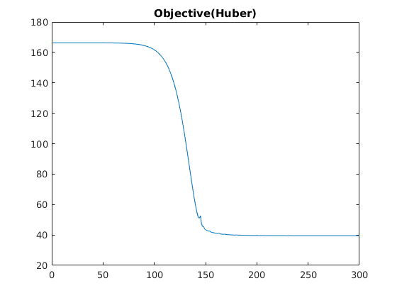

Contents
Inputting data and setting parameters
clear;
tic;
load('../data/assignmentImageDenoisingPhantom.mat')
sample = abs(imageNoisy(1:50,1:50));
rrmse_noisy_noiseless = RRMSE(imageNoiseless,imageNoisy);
fprintf('RRMSE between the noisy and noiseless images is %.4f\n',rrmse_noisy_noiseless);
RRMSE between the noisy and noiseless images is 0.2986
Quadratic Prior
opt_alpha = 0.22;
shiftedmatrices = {circshift(imageNoisy,1,2),circshift(imageNoisy,-1,2),circshift(imageNoisy,1,1),circshift(imageNoisy,-1,1)};
x = imageNoisy;
[~,x] = optimise(opt_alpha*1.2,0,x,imageNoisy,shiftedmatrices,@quadratic,@quadratic_gradient);
rrmse = RRMSE(imageNoiseless,x);
fprintf('At 1.2*(optimum alpha), RRMSE= %.4f\n',rrmse);
x = imageNoisy;
[~,x] = optimise(opt_alpha*0.8,0,x,imageNoisy,shiftedmatrices,@quadratic,@quadratic_gradient);
rrmse = RRMSE(imageNoiseless,x);
fprintf('At 0.8*(optimum alpha), RRMSE= %.4f\n',rrmse);
x = imageNoisy;
[values1,x1] = optimise(opt_alpha,0,x,imageNoisy,shiftedmatrices,@quadratic,@quadratic_gradient);
save('../results/denoised_quad.mat','x1');
rrmse = RRMSE(imageNoiseless,x1);
fprintf('RRMSE using quadratic prior is %.4f\n',rrmse);
fprintf('The optimal parameters for quadratic prior are alpha = %.4f\n',opt_alpha);
At 1.2*(optimum alpha), RRMSE= 0.2120
At 0.8*(optimum alpha), RRMSE= 0.2119
RRMSE using quadratic prior is 0.2101
The optimal parameters for quadratic prior are alpha = 0.2200
Huber Prior
shiftedmatrices = {circshift(imageNoisy,1,2),circshift(imageNoisy,-1,2),circshift(imageNoisy,1,1),circshift(imageNoisy,-1,1)};
opt_alpha = 0.95;
opt_gamma = 0.006;
x = imageNoisy;
[~,x] = optimise(0.8*opt_alpha,opt_gamma,x,imageNoisy,shiftedmatrices,@huber,@huber_gradient);
rrmse = RRMSE(imageNoiseless,x);
fprintf('At 0.8*(optimum alpha) gamma, RRMSE= %.4f\n',rrmse);
x = imageNoisy;
[~,x] = optimise(1,opt_gamma,x,imageNoisy,shiftedmatrices,@huber,@huber_gradient);
rrmse = RRMSE(imageNoiseless,x);
fprintf('At alpha=1 gamma, RRMSE= %.4f\n',rrmse);
x = imageNoisy;
[~,x] = optimise(opt_alpha,0.8*opt_gamma,x,imageNoisy,shiftedmatrices,@huber,@huber_gradient);
rrmse = RRMSE(imageNoiseless,x);
fprintf('At (optimum alpha) 0.8*gamma, RRMSE= %.4f\n',rrmse);
x = imageNoisy;
[~,x] = optimise(opt_alpha,1.2*opt_gamma,x,imageNoisy,shiftedmatrices,@huber,@huber_gradient);
rrmse = RRMSE(imageNoiseless,x);
fprintf('At (optimum alpha) 1.2*gamma, RRMSE= %.4f\n',rrmse);
x = imageNoisy;
[values2,x2] = optimise(opt_alpha,opt_gamma,x,imageNoisy,shiftedmatrices,@huber,@huber_gradient);
rrmse = RRMSE(imageNoiseless,x);
fprintf('RRMSE using huber prior is %.4f\n',rrmse);
fprintf('The optimal parameters for huber prior are alpha = %.4f, gamma = %.4f\n',opt_alpha,opt_gamma);
save('../results/denoised_huber.mat','x2');
At 0.8*(optimum alpha) gamma, RRMSE= 0.2197
At alpha=1 gamma, RRMSE= 0.1881
At (optimum alpha) 0.8*gamma, RRMSE= 0.0597
At (optimum alpha) 1.2*gamma, RRMSE= 0.0599
RRMSE using huber prior is 0.2986
The optimal parameters for huber prior are alpha = 0.9500, gamma = 0.0060
Discontinuity Adaptive Prior
shiftedmatrices = {circshift(imageNoisy,1,2),circshift(imageNoisy,-1,2),circshift(imageNoisy,1,1),circshift(imageNoisy,-1,1)};
opt_alpha = 0.99;
opt_gamma = 0.0012;
x = imageNoisy;
[~,x] = optimise(0.8*opt_alpha,opt_gamma,x,imageNoisy,shiftedmatrices,@adaptive,@adaptive_gradient);
rrmse = RRMSE(imageNoiseless,x);
fprintf('At 0.8*(optimum alpha) gamma, RRMSE= %.4f\n',rrmse);
x = imageNoisy;
[~,x] = optimise(1,opt_gamma,x,imageNoisy,shiftedmatrices,@adaptive,@adaptive_gradient);
rrmse = RRMSE(imageNoiseless,x);
fprintf('At alpha=1 gamma, RRMSE= %.4f\n',rrmse);
x = imageNoisy;
[~,x] = optimise(opt_alpha,0.8*opt_gamma,x,imageNoisy,shiftedmatrices,@adaptive,@adaptive_gradient);
rrmse = RRMSE(imageNoiseless,x);
fprintf('At (optimum alpha) 0.8*gamma, RRMSE= %.4f\n',rrmse);
x = imageNoisy;
[~,x] = optimise(opt_alpha,1.2*opt_gamma,x,imageNoisy,shiftedmatrices,@adaptive,@adaptive_gradient);
rrmse = RRMSE(imageNoiseless,x);
fprintf('At (optimum alpha) 1.2*gamma, RRMSE= %.4f\n',rrmse);
x = imageNoisy;
[values3,x3] = optimise(opt_alpha,opt_gamma,x,imageNoisy,shiftedmatrices,@adaptive,@adaptive_gradient);
save('../results/denoised_adaptive.mat','x');
rrmse = RRMSE(imageNoiseless,x);
fprintf('RRMSE using discontinuity adaptive prior is %.4f\n',rrmse);
fprintf('The optimal parameters for discontinuity adaptive prior are alpha = %.4f, gamma = %.4f\n',opt_alpha,opt_gamma);
At 0.8*(optimum alpha) gamma, RRMSE= 0.2788
At alpha=1 gamma, RRMSE= 0.0818
At (optimum alpha) 0.8*gamma, RRMSE= 0.0621
At (optimum alpha) 1.2*gamma, RRMSE= 0.0578
RRMSE using discontinuity adaptive prior is 0.2986
The optimal parameters for discontinuity adaptive prior are alpha = 0.9900, gamma = 0.0012
Noisy Image
figure
imshow(abs(imageNoisy))
Noiseless Image
figure
imshow(abs(imageNoiseless))
Denoised Image(Quadratic Prior)
figure
imshow(abs(x1))
Denoised Image(Huber Prior)
figure
imshow(abs(x2))
Denoised Image(Discontinuity Adaptive Prior)
figure
imshow(abs(x3))
Report Objective functions
figure
plot(values1)
title('Objective(Quadratic)')
figure
plot(values2)
title('Objective(Huber)')
figure
plot(values3)
title('Objective(Discontinuity adaptive)')
toc;
Elapsed time is 101.285163 seconds.
